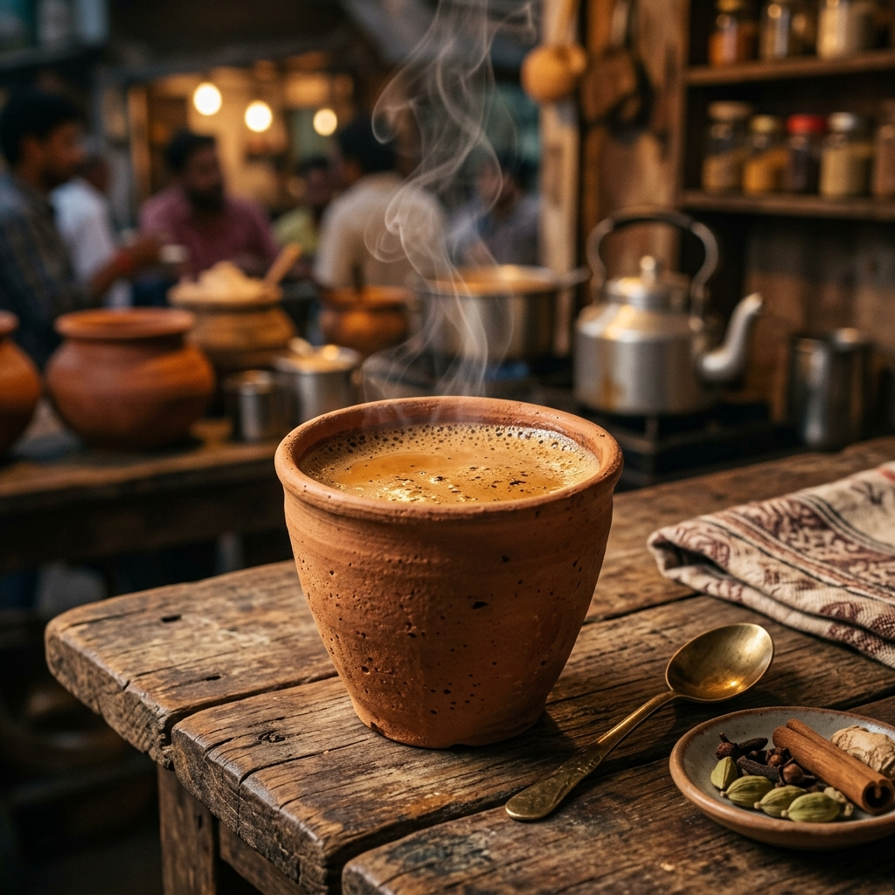

Milk Tea Recipe

It is one of the most popular hot beverages in world and especially in India.
A cup of milk tea (chai) in morning gives refreshing feel and put you on track of long hard day.
It can be prepared with milk or milk powder. This recipe prepares Indian tea using milk, sugar, tea powder and water.
Ingredients:
- 1 cup (250 ml) Milk
- 2 teaspoons Tea Powder
- 1/4 cup (approx. 60 ml) Water
- 3 teaspoons Sugar
Instructions:
- Boil water in a saucepan.
- Add sugar and tea powder in it and boil it for 3-4 minutes on medium flame.
- Add milk and boil it over medium flame for 6-7 minutes or until bubble starts to rise. You will see the change in color of the tea from milky shade to brown shade when it is ready.
- Turn off the gas and strain tea in cups.